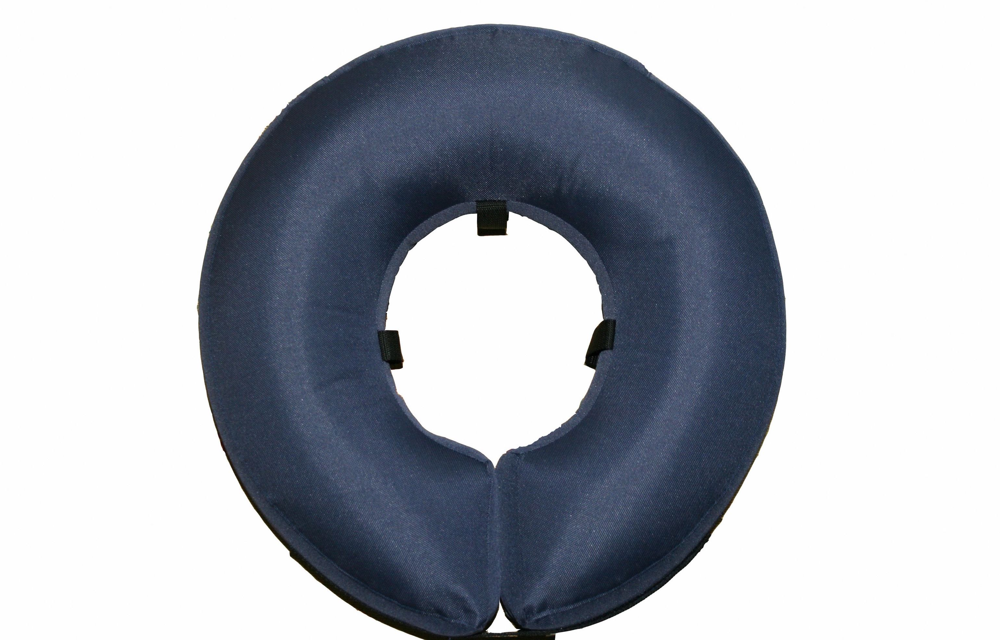

BIG BOY GALLÉR
DUPLA SZÉLES FELFÚJHATÓ MŰTÉTI GALLÉR (antiallergén)
Kutyákra javasolt
A Dr.Pet BIG BOY felfújható gallérunk extra széles, és extra dundi kivitelben, igényesen megtervezett lekerekített formával 5 méretben és 2 színben (sötétkék+pink) készül. A BIG BOY műtéti gallér többször is felhasználható, időtálló, és formatartó, továbbá biztonságos az állat részére ellentétben a polisztirol gyönggyel töltött gallérral szemben, mely jó esetben is talán egyszer használatos, hiszen töltete a babzsákhoz hasonlatosan teljesen összeesik, ezáltal a gallér deformálódik, ellaposodik, hatékonyságát akár 2-3 nap alatt elveszíti. Szakadás esetén életveszélyessé is válhat a szétguruló polisztirol gyöngy, hiszen a kutyának csábító falatnak, játéknak tűnhet, s ha megeszi akár bélelzáródást is okozhat.
MegrendelésLeírás
A gallér, mint egy párna öleli körül a nyakat, mely korlátozottá teszi az állat nyakának mozgását. A gallért tépőzár segítségével lehet összezárni az állat nyakán. A gallér anyaga, ha koszos lesz, vizes ruhával tisztára törölhető, vagy kézzel mosható.
A gallér belsejében található szövet fülek az a célt szolgálják, hogy a kutya nyakörvét vagy egy gézcsíkot bele lehessen húzni, ezzel biztonságossá téve a gallér használatát, mivel így nem tudja leszedni a gallért magáról.
A gallért minden esetben úgy tegyük fel a kutyára, hogy a szelep lefelé álljon, ezzel megakadályozva azt, hogy a kutya el tudja elérni, esetleg megrágni!
Számos visszajelzés alapján a gallér méretéből adódóan hatékonyabb a Standard felfújható gallérnál, sok esetben teljes testen működött, de sajnos itt is vannak kivételek. A BigBoy gallér hatékonyságát a szürkével jelölt terület mutatja, de ez a hatékonyság sokban függ a kutya fajtájától, felépítésétől, habitusától.
A DUPLA SZÉLES BIG BOY GALLÉROK 5 MÉRETBEN KAPHATÓAK.
- MÉRETEK NYAK KERÜLET ALAPJÁN:
- S 18-24 cm 4990,- Ft
- M 25-33 cm 5190,- Ft
- L 34-43 cm 5390,- Ft
- XL 44-53 cm 5590,- Ft
- XXL 54-65 cm 5790,- Ft
További információk
Ha nem tudja eldönteni melyik fajta műtéti gallér lenne ideális, tanácstalan a saját kedvencét illetően illetve méretválasztási gondja/kérdése van, keressen minket bizalommal, segítünk!
Fontos tudnivaló!
A műtéti gallért a belső fülek segítségével mindenképpen rögzíteni kell nyakörvvel vagy gézcsíkkal a kutyus nyakán, ugyanúgy ahogy a hagyományos műanyag gallér esetében, különben könnyen le tudja szedni magáról! CSAK FOKOZOTT FIGYELEM MELLETT ajánlott olyan fajták esetében, akik hosszú végtagokkal vagy hosszú nyakkal rendelkeznek, mint pl. a dogok, az agárfélék, vizslák vagy a dobermann, illetve az olyan hiperaktív kutyáknál, akik fáradságot nem kímélve oldják meg hogy elérjék magukat bármi áron! Több kutya esetén semmiképp ne hagyjuk felügyelet nélkül a galléros kutyákat, hiszen a másik kutya/kutyák kárt tudnak tenni a gallérban! Sajnos a Dr. Pet műtéti gallérok NEM MINDEN ESETBEN válnak be az állatnál, de nagyon sok esetben jó alternatívának bizonyul.
Tartósan kertben tartott, illetve tartósan felügyelet nélkül hagyott kutyák esetében nem javasoljuk gallérjainkat!